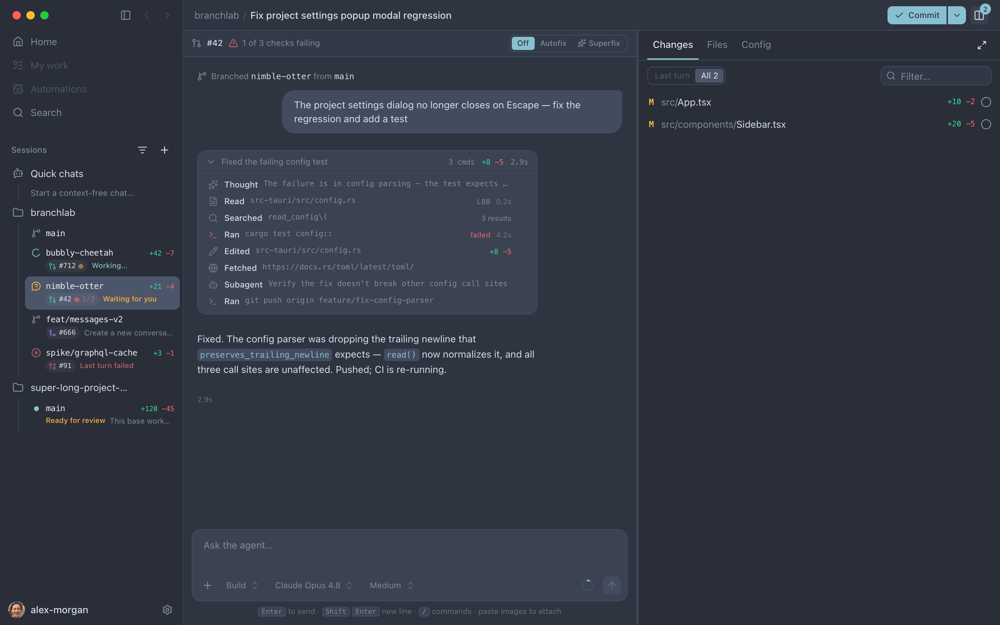
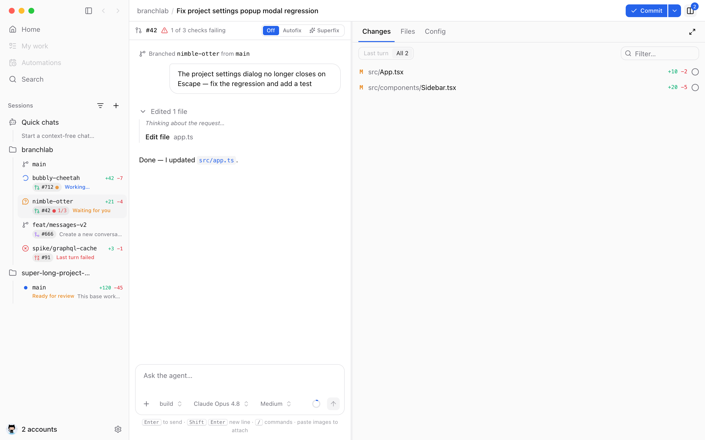
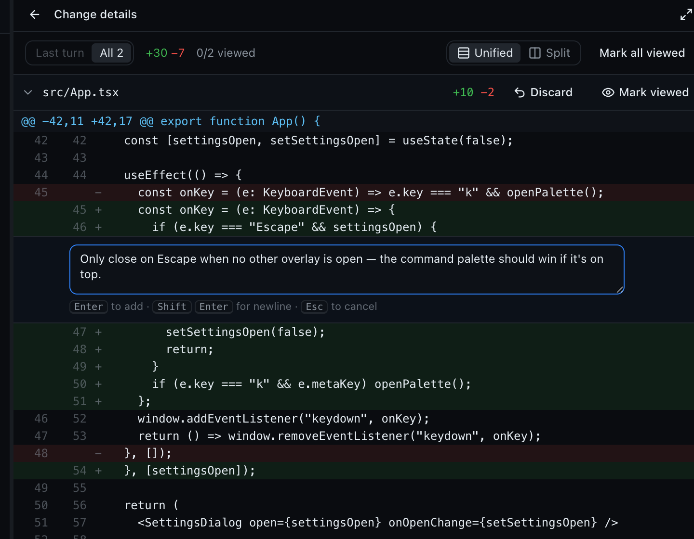
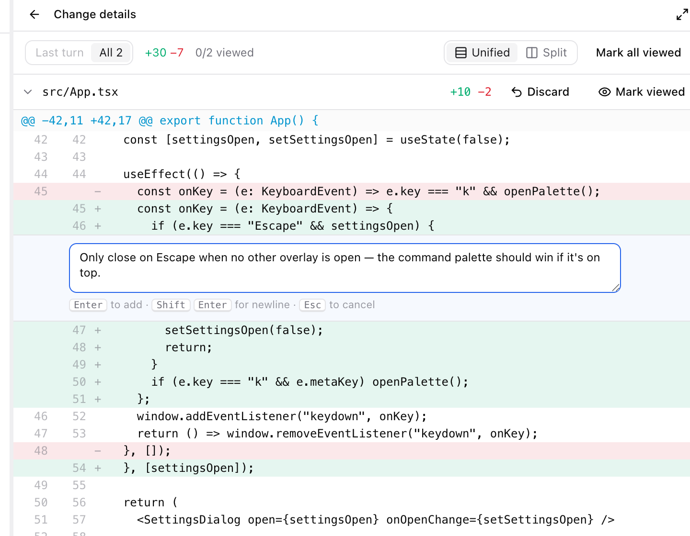
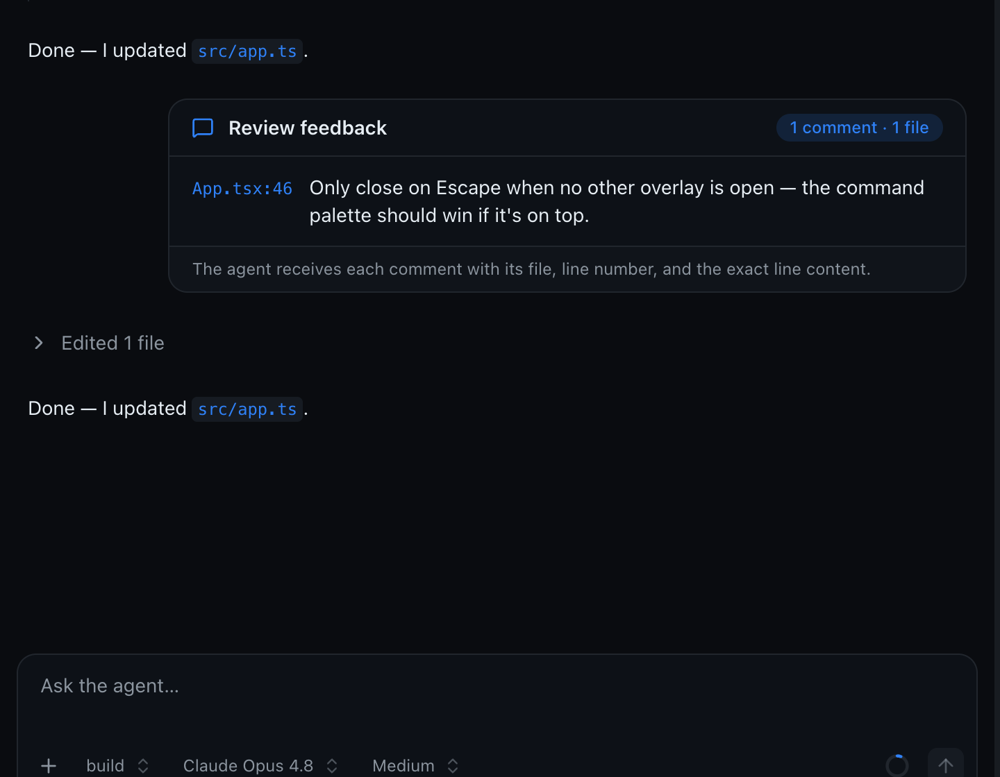
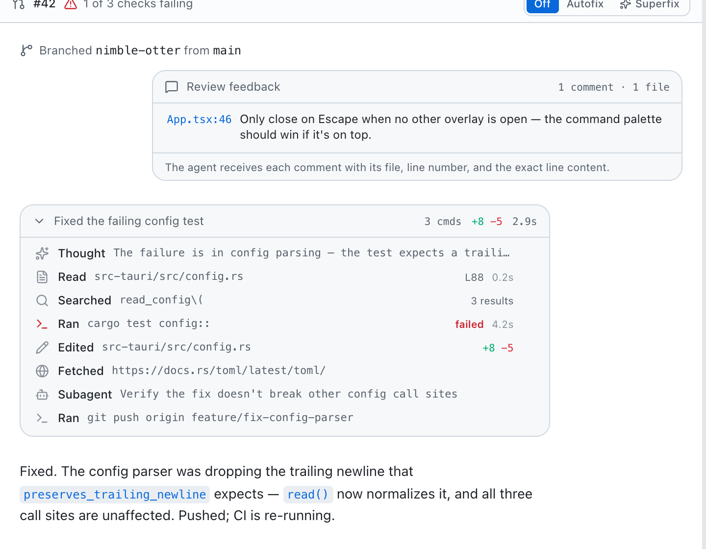
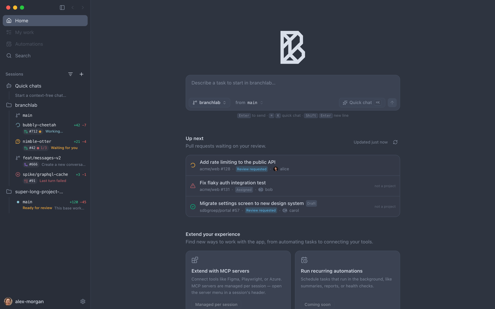
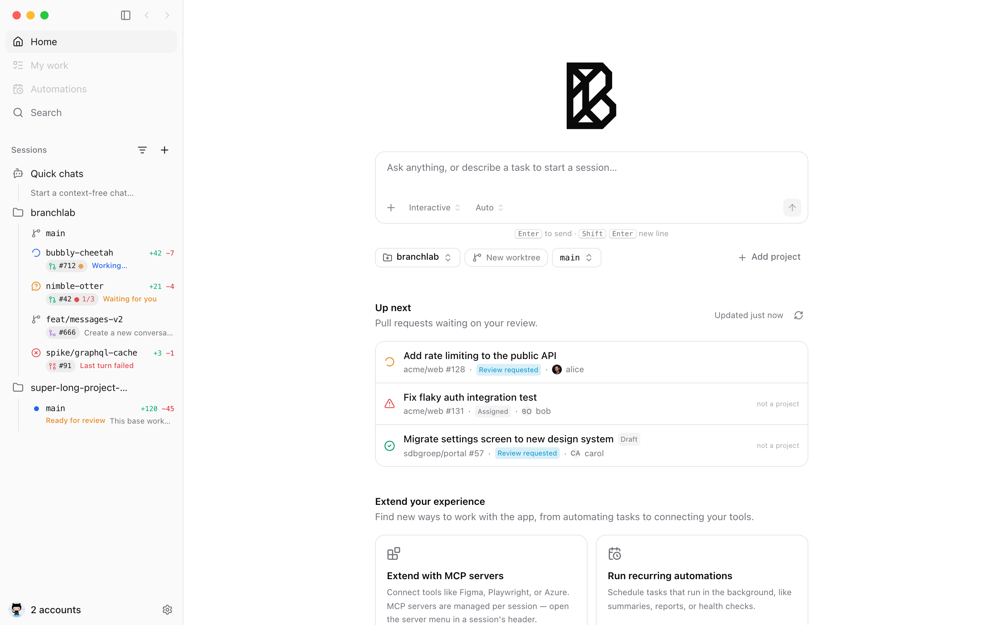

Streaming agent chat
Reasoning steps, tool calls, and edits render live — with real unified diffs inline. Transcripts are cached in SQLite, so they survive restarts and context compaction.
Early access · Free while in development
BranchLab is a macOS app that runs an opencode agent per task — each in its own isolated git worktree — and gives you one window to chat, review diffs, and ship pull requests. It even keeps fixing CI until your checks go green.
Universal .dmg · auto-updates built in · needs
git and the opencode CLI


Every session gets its own branch and checkout. Agents can't step on each other — or on your working copy. No stashing, no branch juggling.
A live sidebar shows who's working, who's waiting for you, diff stats, and PR/CI state for every session — even the ones off-screen.
Review diffs inline, reply with PR-style comments, then commit, push, and open the pull request — from the same window as the chat.
The autofix loop
BranchLab's Rust backend watches every open PR's checks — for all sessions, not just the one on screen. When CI fails, it dispatches the agent with the failing logs and a mandate: reproduce, make the minimal fix, commit.
Everything in one place
Reasoning steps, tool calls, and edits render live — with real unified diffs inline. Transcripts are cached in SQLite, so they survive restarts and context compaction.
Unified or split diffs scoped to the last turn or all changes. Comment on specific lines, batch your notes, and send them to the agent as one structured message.
PRs waiting on you, across every connected GitHub account — including Enterprise. One click checks a PR out into a fresh worktree session.
Pick the model per session, switch build/plan modes, tune thinking effort from low to max. Curate which providers show up in the picker.
Connect and disconnect MCP servers per session, watch language-server status, and answer the agent's permission requests inline in the transcript.
A real macOS app — Tauri + Rust, keyboard-driven, 15 themes, auto-updates. Your code never leaves your machine: agents run through your own opencode install and your own keys.
The review loop
Review the agent's work the way you review a pull request: click a line, leave a note, batch your feedback. One click sends every comment — with its file, line number, and exact code — straight back into the conversation.
PR-style inline comments, right in the changes panel.


Feedback lands as one structured message — and the fix comes back.


Start your day here
The home screen is a launcher and a review queue in one: type a prompt to spin up an isolated session, or pick up a pull request that's waiting on you.


How it works
Point BranchLab at any local git repository. It probes for
git and opencode, binds a GitHub account if you have
one, and that's the setup.
Each prompt spins up a worktree on a fresh branch with its own agent. Start five tasks; they run side by side while the sidebar tracks every one.
Read the diff, push back with inline comments, then commit, push, and open the PR. Flip on Superfix and the checks take care of themselves.
FAQ
macOS, git, and the
opencode CLI on
your PATH (curl -fsSL https://opencode.ai/install | bash). GitHub
features use the gh CLI. BranchLab checks for these on launch and
walks you through anything missing.
Anything your opencode install supports — Anthropic, OpenAI, and the rest. Pick a model per session, set a project default, and tune mode and thinking effort from the composer.
BranchLab has no backend service. Worktrees live on disk, transcripts live in a local SQLite database, and agents talk to model providers through your own opencode configuration and your own API keys or subscriptions.
BranchLab is free while it's in early development. You pay only for the model usage you already pay for through opencode.
macOS-only today — the editor, terminal, and Finder integrations are Mac-native. A portability pass for Windows and Linux is planned.
Free during early access · auto-updates keep you current